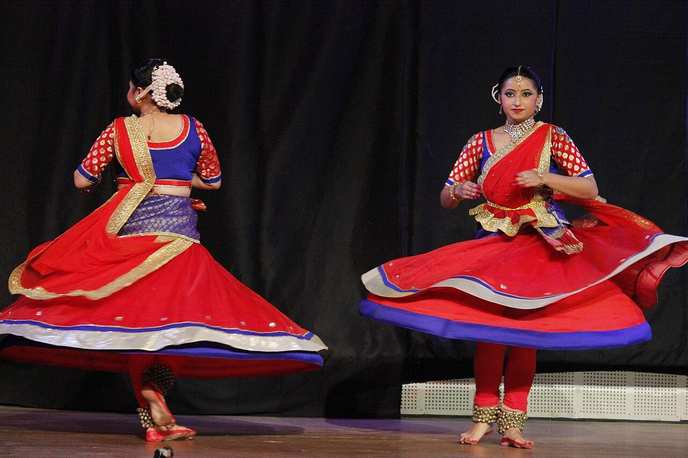

Chapter 16: Kathak¶
Kathak is the classical dance of north India and of Pakistan, known for its rapid, intricate footwork, its spins, its rhythmic dialogue with the drum, and its subtle interpretation of songs. Its name is usually derived from kathā, “story”, and from the kathakas, story-tellers who recited sacred narratives. Like Bharatanāṭyam, Kathak has an official history and a more complicated real one. The official history, formulated in the mid-twentieth century, traces it from ancient temple story-tellers through the devotional dance-dramas of Kṛṣṇa to the Mughal courts, where it is said to have been “secularised”, and back to the temple in its modern revival. Recent scholarship, especially Margaret Walker’s history and Pallabi Chakravorty’s ethnography, has shown that the dance we know as Kathak took shape mainly in the courts and salons of the eighteenth and nineteenth centuries, in the hands of hereditary male dancers and of professional women performers, the courtesans; that the name “Kathak” for this dance and its classical status were established only in the twentieth century; and that the narrative of temple origins played an important part in that classicisation. The art that emerged from that history — its lineages, technique, repertoire, music and costume, and its modern institutions and performers — is described after the history itself.
16.1 Histories of Kathak¶
16.1.1 Kathakas and the story of origins¶
Sanskrit literature mentions kathakas, reciters of stories, and medieval north Indian society had many kinds of professional narrators and singers who performed religious and heroic stories with song and gesture. Modern Kathak dancers have traced their art to such performers, and in particular to a hereditary community called Kathak, settled in eastern Uttar Pradesh and Banaras, some of whose families became the principal dance teachers of the nineteenth and twentieth centuries. The Lucknow family of Birju Maharaj traced its origin to Handia near Allahabad. The connection between this community and ancient story-tellers is plausible in a general sense but cannot be documented in detail (Walker 2014; Kothari 1989).
The devotional dance-dramas of Kṛṣṇa (rāslīlā) performed in Braj, the region of Mathura and Vrindavan, from the sixteenth century onwards share many themes with Kathak’s expressive repertoire, and the twentieth-century narrative often presented the rāslīlā as Kathak’s direct ancestor. The two forms have influenced each other, but the rāslīlā is a distinct tradition of Brahmin-led troupes of boy actors, and the claim of direct descent is part of the modern story rather than an established fact (Walker 2014).
16.1.2 Dance at the courts¶
The dance that became Kathak developed above all in the courts of north India in the seventeenth to nineteenth centuries: the Mughal court and its nobility, the Rajput courts of Rajasthan, the nawabs of Awadh at Lucknow, and the smaller courts and wealthy households of the region. In these settings dance was performed by professional women — the courtesans (ṭawāʾif), whose households trained girls in singing, dance and poetry and who entertained in the mahfil, the evening gathering of music and conversation — and by hereditary male dancers and musicians, who taught them and also performed themselves. Mughal and Rajput paintings show women dancers in long skirts and jackets turning, with musicians playing sāraṅgī and drums; European visitors described the “nautch” performances of dancing women at courts, festivals and receptions (Walker 2014; Morcom 2013).
The court of Wājid ʿAlī Shāh, the last nawab of Awadh (r. 1847–1856), occupies a special place in Kathak’s history. The nawab was himself a poet, composer and performer, staged dance-dramas (rahas) on the theme of Kṛṣṇa and the cowherd women, and patronised musicians and dancers; the ṭhumrī, the lyrical song genre central to Kathak’s expressive repertoire, flourished at his court (Chapter 7). Tradition names Ṭhākur Prasād as the nawab’s dance teacher and Kālkā Prasād and Bindādīn, younger members of the same family, as the founders of the Lucknow lineage; Bindādīn is remembered as the composer of many ṭhumrīs. After the British annexation of Awadh in 1856, the nawab’s household moved to Calcutta, and the musicians and dancers of Lucknow dispersed among other patrons (Kothari 1989; Walker 2014).
16.1.3 The anti-nautch campaigns and the classical revival¶
From the late nineteenth century the courtesans became the target of the same anti-nautch campaigns that attacked the temple dancers of the south (Chapter 15). Reformers condemned their art as immoral; their aristocratic patrons disappeared; and many women abandoned dance, turned to singing for the gramophone and the radio, or later found work in the film industry. The hereditary male dancers, meanwhile, became teachers to new middle-class students.
In the 1930s and after, Kathak was reconstructed as a “classical” art. Dancers such as Madame Menaka (Leila Sokhey, 1899–1947) created Kathak ballets for the stage; the hereditary families of Lucknow and Jaipur taught in the new schools of Bombay, Delhi and Calcutta; and after Independence the Sangeet Natak Akademi recognised Kathak as one of India’s classical dances. The name “Kathak” itself, which had referred to the hereditary community, was now applied to the dance. As Margaret Walker shows, this classicisation was accompanied by a new history: the dance was said to have begun in Hindu temples, to have been “degraded” at the Muslim courts and by the courtesans, and to have been restored to its spiritual roots by the revival. Pallabi Chakravorty and Anna Morcom have shown how this narrative excluded the courtesans and other professional women performers, whose art the classical form had absorbed, and how “respectable” Kathak has continued to define itself against them (Walker 2014; Chakravorty 2008; Morcom 2013).
Scholarly Note: Hindu and Muslim in Kathak
Kathak is often described as a “synthesis” of Hindu devotional and Muslim courtly culture. The description is apt in that its repertoire includes both songs about Kṛṣṇa and the salāmī (salutation) of the Mughal court, both bhajan and ghazal, and in that its makers included Hindus and Muslims. But it can also suggest two separate cultures that met, whereas the courtly culture of north India was itself shared: Muslim patrons commissioned songs about Kṛṣṇa, Hindu dancers performed at Muslim courts, and the courtesans and musicians who created much of the art belonged to communities that crossed religious lines. The more recent tendency to present Kathak as essentially Hindu and its court history as a deviation is as much a modern construction as the synthesis (Walker 2014; Chakravorty 2008).
16.2 The World of the Ṭawāʾif¶
Because the courtesans were written out of the history of classical dance, it is worth describing their world more fully. In the cities of north India in the eighteenth and nineteenth centuries — Delhi, Lucknow, Banaras, Patna, Agra, Hyderabad and others — the most accomplished professional women performers lived in households, often headed by an older woman, that trained girls in singing, dance, Urdu poetry and the manners of courtly society. Their salons (koṭhā) were places of music, conversation and poetry where young men of good family were sent to acquire refinement, and their patrons included nobles, merchants and officials. The leading courtesans were wealthy, owned property, commissioned and composed poetry and music, and were among the principal patrons of the male musicians and dancers who taught and accompanied them. Their relationships with patrons were often sexual, and the profession included women of very different status, from celebrated artists to women in poverty and dependence (Morcom 2013; Perron 2007).
The courtesans’ art centred on the song — ṭhumrī, dādrā, ghazal — interpreted through expressive movement and gesture, with passages of rhythmic dance. Much of what is now the expressive repertoire of Kathak, including the seated interpretation of songs (bhāv batānā), was their creation or was developed in their salons. From the late nineteenth century the colonial state, Indian reformers and the new nationalist culture combined to stigmatise them as prostitutes: the courtesans lost their patrons, their property and their social standing, and their art was taken over, in modified form, by middle-class dancers who sought to distance themselves from it. Anna Morcom has traced the afterlife of the courtesan tradition among women performers in the twentieth and twenty-first centuries, in the shadow of the “respectable” classical arts and of Bollywood (Morcom 2013). Recognising the courtesans’ contribution does not require romanticising their world; it requires including them in the history of the art they helped to create.
16.3 The Gharānās¶
Like Hindustani music, Kathak is transmitted in stylistic lineages called gharānās, centred on hereditary families of teachers (Kothari 1989; Walker 2014).
- Lucknow.
- Associated with the family of Ṭhākur Prasād, Kālkā Prasād and Bindādīn, and in the twentieth century with Kālkā Prasād’s sons Acchan Maharaj (1883–1946), Lacchu Maharaj (1901–1978) and Shambhu Maharaj (1910–1970), and Acchan Maharaj’s son Birju Maharaj (1938–2022). It is known for grace and delicacy (nazākat), for the subtle interpretation of ṭhumrī and for refined, rounded movement.
- Jaipur.
- Associated with dancers who served the courts of Rajasthan, among them the brothers Jailal and Sundar Prasad and their families. It is known for vigorous, complex footwork, long compositions in difficult tālas, powerful parans derived from the pakhāvaj, and fast turns.
- Banaras.
- Associated with the lineage traced to Jānakīprasād and with the naṭvarī style of rhythmic syllables; Sitara Devi (1920–2014), daughter of the Banaras teacher Sukhdev Maharaj, became one of the most celebrated performers of the twentieth century.
- Raigarh.
- A shorter-lived lineage created at the court of Raja Chakradhar Singh of Raigarh (in present-day Chhattisgarh) in the 1930s and 1940s, where dancers and musicians from Lucknow and Jaipur were brought together and new compositions and treatises were produced.
The distinctions between gharānās are real but have been blurred by modern teaching, in which students often learn from teachers of different lineages.
16.4 Technique¶
16.4.1 Stance and footwork¶
The Kathak dancer stands upright, with the weight evenly distributed on flat feet and the knees straight or slightly flexed, the posture of the courtly mahfil rather than of the half-seated southern forms. The basic stance (thāṭ) is a graceful pose with one arm raised and the head and eyes slightly inclined. The feet produce rhythm through rapid striking of the heel, the ball and the flat of the foot, and through the ankle bells (ghuṅgrū), often more than a hundred on each ankle, which the dancer can sound loudly, softly or with a single isolated bell. The basic footwork pattern (tatkār), recited to the syllables tā thei thei tat, ā thei thei tat, is practised in Tīntāl at increasing speeds and in many variations; in performance the dancer improvises series of variations (laḍī, “chain”) on a footwork pattern, building to a climax.
16.4.2 Turns¶
The cakkar (“turn”) is Kathak’s most spectacular movement. The dancer spins on the heel or ball of one foot, or with alternating feet, the arms held out or close to the body, completing a turn in each beat or half-beat, and often ends a series of turns in a held pose on the sam. Dancers perform long series of turns — sometimes dozens — at high speed; the spreading skirts of women dancers make them visually striking (Figure 16.1). The suggestion that Kathak’s turns derive from the whirling of Sufi dervishes is speculative; turning is a common element of north Indian dance.

.jpg){kind=link}
16.4.3 The upper body and the hands¶
Kathak uses the hands, arms and upper body in long curving lines and soft, rounded movements, with the wrists and fingers often finishing a phrase in a delicate gesture. Its gestures are less codified than those of the southern forms: in the expressive repertoire the dancer relies more on naturalistic mime, on the eyes and face, and on small movements of the head, neck and shoulders than on a fixed vocabulary of hand signs (Chapter 14). The eyebrows, eyes and neck — the sideways glide of the neck, the play of a glance — are used with great subtlety, especially in the Lucknow style.
16.5 The Repertoire¶
16.5.1 Pure dance¶
Kathak’s pure dance (nṛtta) is built on rhythmic compositions that the dancer usually recites (paḍhant) before dancing them, so that the audience hears the rhythmic pattern and then sees and hears it executed (Kothari 1989):
- Thāṭ.
- An opening in slow tempo, in which the dancer explores poses and small movements of the eyes, neck and wrists within the tāla, marking the sam with a pose.
- Āmad.
- An “entrance” composition (from Persian āmad, “arrival”), often with the syllables of speech rather than of the drum.
- Salāmī.
- A composition ending in a salutation, a survival of the court mahfil.
- Ṭukṛā and toḍā.
- Short compositions (“pieces”), usually ending in a tihāī on the sam.
- Paran.
- A composition in the heavy, resonant syllables of the pakhāvaj (dhā, kiṭa, taka, dhumakiṭa), danced with powerful footwork.
- Kavitt.
- A poem, often in Braj Bhāṣā and on a devotional theme, set to rhythm and danced with gestures illustrating the words.
- Primalu.
- A composition made of the names of gods set to rhythm.
- Chakkardār compositions.
- Compositions repeated three times so that their final syllable falls on sam (Chapter 5).
- Tatkār and laḍī.
- Extended improvised footwork.
- Jugalbandī.
- An improvised rhythmic dialogue between dancer and drummer, in which each answers and extends the other’s phrases, often ending with a shared tihāī.
16.5.2 Gat¶
The gat (“gait” or “movement”) is a distinctively Kathak genre. In gat nikās (“bringing out the gait”) the dancer, moving with a gliding walk around the stage in Tīntāl, presents a character with a few stylised gestures — a young woman with a veil, a woman carrying a water pot, Kṛṣṇa with his flute, a deer — and returns to the starting point on the sam. In gat bhāv the dancer develops such a character into a short narrative, without words, through mime and movement: Kṛṣṇa stealing butter, the encounter of Rādhā and Kṛṣṇa at the riverbank, the “teasing at the well” (panghaṭ), episodes from the epics. In these pieces the dancer may play several characters in rapid alternation, identifying each by a characteristic gesture, stance or way of wearing the veil.
16.5.3 Expressive dance¶
Kathak’s expressive genre is the interpretation of songs: ṭhumrī, dādrā, bhajan and ghazal. In the style called bhāv batānā (“showing the feeling”), the dancer, seated or standing almost still, interprets each line of a song sung by a vocalist, elaborating it through successive interpretations in the manner described in Chapter 3. This art was developed by the courtesans and by the hereditary male dancers of Lucknow and Banaras, among whom Bindādīn and Kālkā Prasād’s descendants were especially celebrated; in the twentieth century Shambhu Maharaj and Birju Maharaj were renowned for it. Much of its repertoire consists of love songs in which the heroine addresses Kṛṣṇa or an unnamed beloved, expressing longing, reproach or the joy of meeting.
16.5.4 The recital¶
A modern Kathak solo recital usually begins with an invocation (vandanā) and a section of pure dance in Tīntāl — thāṭ, āmad, ṭukṛās and toḍās, parans, kavitts — often with gat nikās and gat bhāv; continues with expressive items such as a ṭhumrī or bhajan; and ends with fast footwork, turns and a jugalbandī with the drummer. Dancers sometimes perform in other tālas (Jhaptāl, Dhamār, Rūpak) or in compositions of unusual length to display their rhythmic skill. The tempo of the pure-dance section rises gradually, as in Hindustani music, from slow to very fast (Chapter 13).
16.6 Music and Costume¶
16.6.1 Music¶
Kathak is accompanied by Hindustani musicians: a tablā player (and sometimes a pakhāvaj player), a singer, and an instrumentalist playing sāraṅgī, sitār, flute or harmonium, who plays a repeated melodic cycle (lahrā or nagmā) that marks the tāla during the pure dance. The relation between dancer and drummer is central: the drummer must follow every nuance of the dancer’s footwork, and the two improvise together. The dancer is also expected to be a skilled reciter of rhythmic syllables, and often a singer.
16.6.2 Costume¶
Two styles of costume are common. In the “Mughal” style, women wear a long fitted jacket with a flared skirt (aṅgarkhā or anārkalī) over close-fitting trousers (cūṛīdār), with a cap or veil; in the “Hindu” style, a full skirt (lahãgā or ghāgrā) with a bodice and a long scarf (oṛhnī or dupaṭṭā) used expressively to represent a veil, a cradle or a river. Men wear a long aṅgarkhā or kurtā with cūṛīdār or a dhotī. Both styles are modern stage costumes based on the dress depicted in court painting; the difference between them, like many aspects of modern Kathak, reflects the twentieth-century debate about the dance’s “Hindu” and “Muslim” identities.
16.7 Institutions and Performers¶
After Independence Kathak was taught in new institutions: the Bharatiya Kala Kendra in Delhi (1952), where Lacchu Maharaj’s brother Shambhu Maharaj and later Birju Maharaj taught; the Kathak Kendra, established in Delhi in 1964 as a national institute under the Sangeet Natak Akademi; dance departments of universities; and many private schools. The hereditary teachers trained middle-class women from many regions, who became the principal performers of the form, and men from non-hereditary backgrounds also took it up (Chakravorty 2008; Kothari 1989).
Among the leading performers and teachers of the twentieth century were Birju Maharaj, who combined the Lucknow tradition with a remarkable gift for choreography and teaching and received the Padma Vibhushan in 1986; Sitara Devi of Banaras, famous for her energy and her performances in early Hindi cinema; Damayanti Joshi; Gopi Krishna, who also worked in film; Rohini Bhate of Pune, a scholar and teacher; and Kumudini Lakhia, who founded the Kadamb school in Ahmedabad in 1967 and created group choreographies that broke with the solo format and the conventional themes of the form (Katrak 2011).
16.8 Training a Kathak Dancer¶
Training in Kathak begins with the basic stance and with tatkār, practised daily in Tīntāl at slow, medium and fast tempos until the feet can produce clean, even strokes at every speed, and with the recitation of the syllables of the ṭhekā and of simple compositions while keeping the tāla with the hands. The student learns the hand and arm movements called hastak together with the footwork, then the turns, first single and then in series, and gradually a repertoire of ṭukṛās, toḍās, parans and tihāīs from the teacher’s lineage. Rhythmic recitation (paḍhant) is an essential skill, since the dancer must recite each composition clearly before dancing it. Expressive dance is taught later, through gats and the interpretation of bhajans and ṭhumrīs, and the art of improvising expressive variations is acquired, if at all, only after many years. In the institutions founded after Independence, this training was organised into graded courses and examinations, while many students continued to learn privately in the households of hereditary teachers (Chakravorty 2008; Kothari 1989).
16.9 Kathak beyond India¶
Kathak is not only an Indian art. In Pakistan, dancers of Kathak and related forms continued to perform and teach after 1947, and state cultural institutions supported dance in the 1950s and 1960s; but under the military government of the late 1970s and 1980s public dance was officially discouraged, and several leading dancers left the country or performed mainly abroad. Nahid Siddiqui, a pupil of the Pakistani teacher Maharaj Ghulam Hussain Kathak and later of Birju Maharaj, became the most internationally prominent Pakistani Kathak dancer, working for long periods in Britain. In Bangladesh, Kathak is taught alongside other classical and folk dances. In the South Asian diaspora, especially in Britain and North America, Kathak has become one of the most widely studied Indian dance forms, taught in community schools and in some universities, and British dancers such as Akram Khan have made it the starting point for contemporary choreography that has reached audiences far beyond South Asian communities (Chapter 23) (Katrak 2011; Chakravorty 2008).
16.10 Kathak and Film¶
Hindi cinema has drawn heavily on Kathak and on the courtesan dance from which it grew. Classic films set in courtesan milieus, such as Pakeezah (1972) and Umrao Jaan (1981), and historical spectacles such as Mughal-e-Azam (1960), whose famous dance sequence was choreographed by Lacchu Maharaj, presented Kathak-based dance to vast audiences; Birju Maharaj choreographed for several films, among them Devdas (2002). Film has popularised Kathak and provided a livelihood for many dancers, but it has also perpetuated the image of the courtesan dancer that the classical form sought to escape, and the boundary between “classical” Kathak and film dance remains a matter of concern among teachers and critics (Morcom 2007; Chakravorty 2008).
16.11 Kathak and Bharatanāṭyam Compared¶
The two most widely practised classical forms differ in almost every technical respect — Kathak’s upright stance against Bharatanāṭyam’s half-seated one, its turns against Bharatanāṭyam’s lines, its Hindustani music against Bharatanāṭyam’s Karnatak, its relatively uncodified gestures against Bharatanāṭyam’s vocabulary of hastas. Their histories are strikingly parallel. Both grew out of the art of professional women performers and the hereditary male teachers who trained them; both suffered from the anti-nautch campaigns; both were reconstructed in the twentieth century as “classical” arts with ancient, devotional histories, largely by and for middle-class performers; and in both cases the women whose art was reconstructed were marginalised in the process. The comparison shows that the history of Indian dance in the modern period is in large part a single history, played out in different regions and idioms (Chapter 1).
Further Reading¶
Walker (2014) is the essential critical history of Kathak, and Chakravorty (2008) an ethnography of Kathak, women and modernity. Morcom (2013) discusses the professional women performers excluded from “classical” dance, and Morcom (2007) the music and dance of Hindi film. Kothari (1989) is a well-illustrated account of the gharānās, technique and repertoire. For the music see Chapter 7 and Manuel (1989).